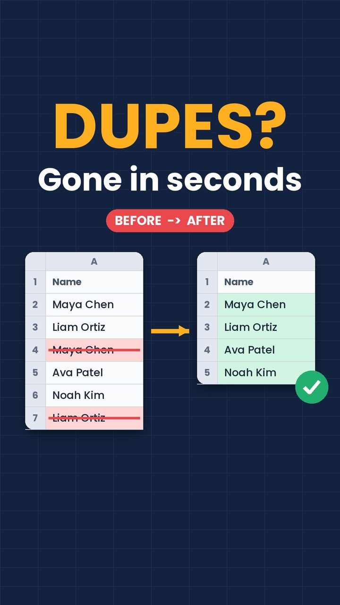
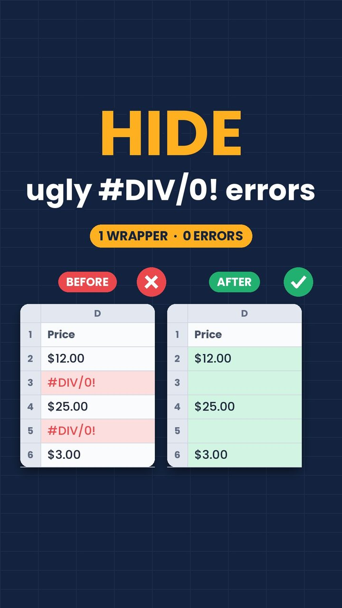

@cellbycell1: Daily Spreadsheet Reels
An Instagram account of Excel and Google Sheets tips that runs on its own: AI picks the topic, animates the Reel, writes the caption and posts it at prime time every day.
- Role
- Idea, account setup and prompts, built with Claude
- Runs
- One Reel a day at prime time
- Output
- Animated 25 to 40 second Reels with original music
- Status
- Live since November 5, 2026

01 · Problem
What need does it solve?
Short spreadsheet tips are useful, but turning each one into a video is slow: a small table to animate, a formula to show, a cover, music, a caption and the right hour to post.
The aim was to hand that whole loop to AI after the first setup, while keeping every formula on screen correct.
02 · Solution
How it works
A scheduled Claude task runs once a day. On every run it:
- Takes the next topic from a four-week calendar with a fixed weekly mix: formulas, shortcuts, data cleaning and visual tricks such as checkboxes
- Checks the formula, shortcut or menu path against Microsoft and Google help pages, and computes every result shown on screen from the table
- Renders the Reel in code: a mini spreadsheet, the formula typed into the formula bar, a check mark on the result, and a closing “Works in” note for Excel and Google Sheets
- Opens with a bold hook and shows the payoff within the first second or two
- Adds original music generated in code, rotating between styles so no two Reels sound alike
- Writes the caption and hashtags and publishes at the prime-time slot for that day, with no approval step





03 · Architecture
How the system fits together
The task reads the content calendar, checks the topic, then runs a shared render engine that draws every frame, builds the cover and generates the soundtrack. The finished video goes to a public repository so the publishing service can fetch it, and Windsor.ai posts it to Instagram. Each post is logged so topics never repeat.
04 · Technology
What it is built with
| Agent | A scheduled Claude task that plans, checks, renders and posts each Reel |
|---|---|
| Video | Python and Pillow draw each frame; FFmpeg encodes a 1080×1920 Reel |
| Music | Original tracks generated in code, with a style rotation per video |
| Media hosting | A public GitHub repository serves the videos and keeps the content calendar |
| Publishing | Windsor.ai connector for Instagram |
| Timing | Fixed prime-time slots by weekday, US Eastern |
05 · Challenges
Hard parts and how they were solved
Every formula must be right
Each tip is checked against the official help pages before rendering, and the numbers on screen are computed from the table rather than typed in.
Stopping the scroll
Every Reel opens with a large one-word hook and shows the bad and good versions side by side within the first second or two.
Music without licensing or repetition
The soundtrack is generated in code for each video. A picker rotates styles and never reuses the last two; after feedback that early tracks sounded harsh, the sounds were switched to cleaner piano, marimba and guitar tones.
A consistent look, made new each day
A shared engine and style guide fix the colours, fonts and layout, while each Reel gets its own table, formula and cover.
06 · Results
What came out of it
- Live since November 5, 2026, posting a new Reel every day on its own.
- Every Reel is original: its own animation, cover, caption and music.
- No manual step between the topic plan and the published post.